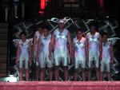

Description
Creation of a multicultural and multidisciplinary drama performance based on the Māori myth about Tamatane. The performance was developed to mark the 12–year sister–city link between Auckland City and Guangzhou in Southern China. Auckland City Council invited Kerry Lynch (HOD Otahuhu College) and 12 of his students to develop and perform a dramatic work to promote "Auckland Day" to the people of Guangzhou.
Schools/Teachers
- 12 students from years 11–13 were involved (7 female, 5 male).
- Otahuhu College is a Decile 1 Auckland co-educational secondary school with 1,400 students.
- 57 percent of students are of Pacific Islands origin, 20 percent Maori, 20 percent Asian and under 2 percent Pākehā/European.
- The school has a strong drama department with a reputation for producing both scripted and devised original works that are strongly physical and visual in character.
- The department is committed to developing students' skills in dance and music theatre.
Content
- The Tamatane myth is the founding myth of Otahuhu College.
- The plot features Tamatane, a young man without purpose or motivation in life, who transforms himself into a kotuku (white heron), flies to the heavens and meets the Gods, is empowered by their knowledge, and returns to his family and community to become an inspirational leader.
- The duration of the drama performance was 45 minutes.
- Parent and community member support and involvement.
Purpose/Outcomes
The purpose was to:
- create a multicultural and multidiscipline (dance, drama, music) performance to take to China;
- build on class studies of Briar Grace–Smith (particularly her plays purapurawhetu and Nga Pou Wahine both of which derived from a mythological base);
- provide students with a sense of ownership in the creative process; and
- enable some students to gain unit standards towards achieving a National Certificate in Performing Arts.
|
"Yes, we are interested in doing some performance work for the Council in 2001"
Kerry Lynch, HOD, Otahuhu College |

"Great, your first gig will be in May and it will be in China!"
Steve Bradshaw, Arts Officer, Auckland City Council
|
|